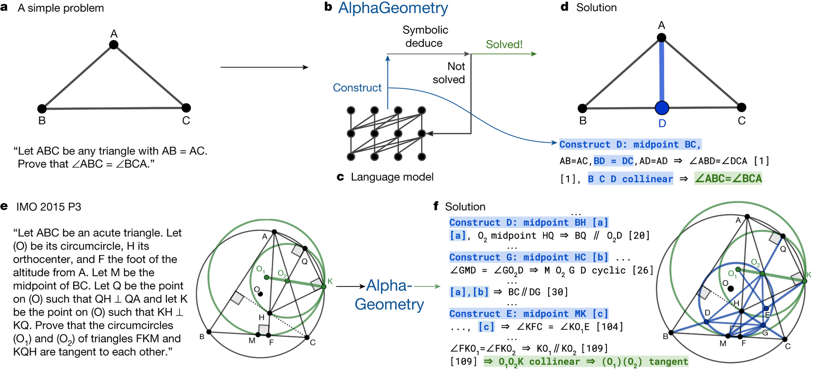

Lo que sabemos ahora, el proyecto y lo que viene
Sistemas Inteligentes · Especialización en Inteligencia Artificial · UNAL Manizales · 15 min
plantilla_plan.mdPrimera versión: inicio de la semana 2. Desde entonces, el plan.md es la bitácora del proyecto.
| Trabajo | Bloque | Tiempo |
|---|---|---|
| TI-1 · Su proceso como problema de planificación | 1 | 70 min |
| TI-2 · Ponga a prueba a un LLM como planificador | 2 | 65 min |
| TI-3 · El plan.md de una tarea real de su trabajo | 3 | 75 min |
Entrega: inicio de la semana 2, un PDF por trabajo. Enunciados completos en trabajo_independiente.md.

Trinh, T. H., Wu, Y., Le, Q. V., He, H. y Luong, T. (2024). Solving olympiad geometry without human demonstrations. Nature 625, 476–482. Acceso abierto
Unidad 3: cómo razonan los LLMs y cómo se verifica un razonamiento con solvers.